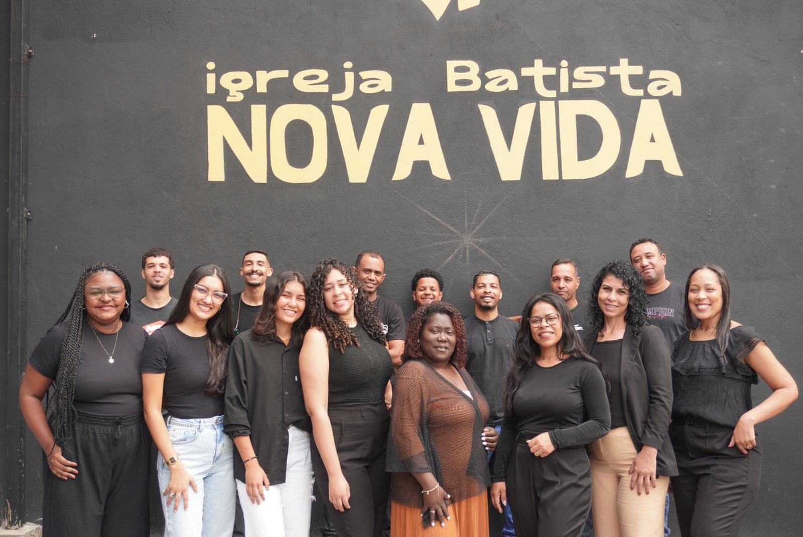

Ministério de Louvor
Conduzindo a igreja à adoração genuína através da música e das artes.
O Ministério de Louvor da Igreja Batista Nova Vida é formado por uma equipe de músicos, vocais e técnicos que, com dedicação e amor, buscam levar a congregação a um encontro com Deus em cada culto. Nosso objetivo é criar um ambiente onde a adoração seja a expressão sincera de corações rendidos a Cristo.
Trabalhamos em unidade, através de ensaios, reuniões de oração e estudos bíblicos, para aprimorar nossos dons e servir com excelência. Acreditamos que o louvor não é apenas uma parte do culto, mas um estilo de vida de gratidão e obediência a Deus.
Nossa Galeria de Fotos

Ensaio semanal da equipe de louvor.
Momento de oração antes do culto.

A congregação em um momento de adoração.

Louvor e celebração ao Senhor.
Programação da Semana
- Terça-feira: Ensaio de Vocal e Instrumental (20:00h - Auditório Principal)
- Sexta-feira: Reunião de Oração e Estudo (19:30h - Sala de Reuniões)
- Próximo Evento Especial: Workshop de Adoração e Instrumentos nos dias [20 - 22 de abril 2026]! Saiba Mais
Conheça Nossos Líderes:
Mirian Santana Pereira
Líder Sênior
Participe do Ministério de Louvor!
Para mais informações sobre o Ministério de Louvor, entre em contato conosco!
Fale Conosco Voltar para Ministérios